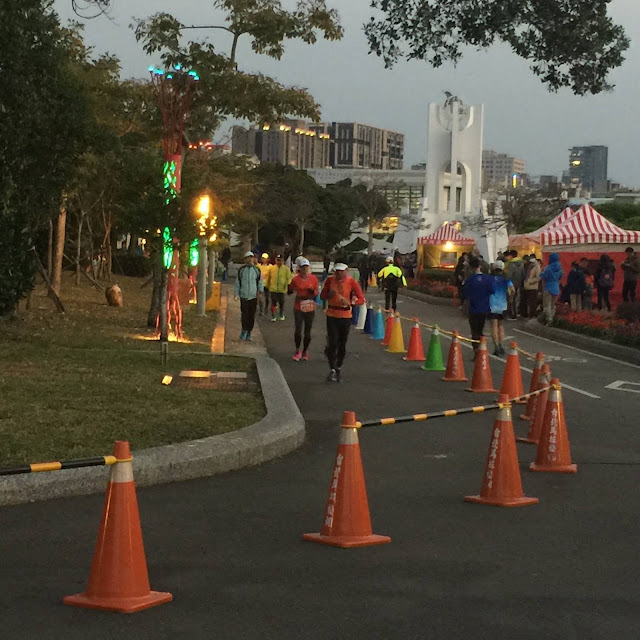

如何享受比賽？
今天是 Garmin PB 班最後一次分享，也在提醒大家渣打馬拉松之前的注意事項，關於比賽的幾點簡單提醒之後，這次我向大家拋出的幾個問題是：「一開始為何開始跑步？」還有，「為什麼跑到現在？」
是為了健康？為了減肥？為了變美變帥？或是為了累積全馬完成次數(為了百馬)？……還是為了破 PB？我想這些都只是表面上的理由，我們這群業餘跑者並非只是為了這些理由堅持到現在。
而是為了感受「自由」！那，什麼是自由？

在封建時代的奴隸，沒有身體的自由；在白色恐怖時代，沒有思想與言論的自由；活在二十一世紀民主時代的我們可以享有身心的自由。我們能夠決定要去哪裡、可以自由發言，但身體和思想的自由卻不保證「精神上的自由」。事實上，很少人有機會解放自己精神上的自由。
隨心所欲並非自由；就像自由落體中的身體是不自由的一樣。身體自由的基礎來自於穩定地面的支撐；精神自由的基礎則來自嚴格的自律(自律則是由人類獨一無二的理性所訂定)，所謂「嚴格」是指：其中含有相當程度的痛苦成分，這是自找的痛苦。以跑步來比喻的話，就像今天在臺北花博新生園區裡那些不斷繞圈的 24 小時超馬跑者一樣，在這種規律性的自找苦吃中，他們正一步步地把加諸在身上的教條與規範解開。
但如果在跑步當下太在意目標、或是為了尋求認同而跑，精神又會立刻被加上另一道束縛，我們不能為了成績而跑，更不能為了他人的肯定(或是為了不被批評)而跑，那會讓「我們最初開始跑步時所體驗到的自由」消失。不行！自由，是我們跑者必須好好珍惜的價值，絕不能為了成績與他人的眼光而犧牲它。
100%的永恆自由是《莊子》一書中所描繪的神人與至人，他們已經超脫形軀我與精神我的限制，可以 100%逍遙自在。我們是凡人，只能盡量往「自由」靠近。跑步，是人生中少數可以幫助我們同時體驗到身、心與精神上自由的活動之一。
這並非「否定設定目標」，用康德的話來說：我們不可能完全脫離他律，人生一定受到自然定律、愛欲、衝動與各種目標所驅使(就像人離不開重力這種他律一樣)，但只要能在(跑步)當下，盡量專注當下所做的事情本身，以理性運用他律……人的價值與尊嚴就能彰顯出來。
Ⓞ李奧帕德說得好：「令人滿意的嗜好必須是相當沒有用處、沒有效率、耗費勞力或者無意義的。」（《沙郡年紀》，2005 年，頁 250） →興趣與嗜好的本質即是「無用」。
Ⓞ村上春樹說：「我因為打從一開始就對『寫小說』這件事沒有想太多，可以說幸虧無欲，反而能很乾脆地寫出來也不一定。」(《身為職業小說家》，2016 年，頁 99)→我們這群業餘跑者，一開始都是抱著無所求(無欲)的心情開始跑步的，因為無欲，所以反而很乾脆地跑到了現在。
Ⓞ康德說：「人本身就是目的，人不能變成工具，一變成工具就會失去自由」。→一心想著追求成績、獎牌、名次，人就變成了(追求目標的)工具。當我們只是在循環流動的單純步伐中履行自己所選定的義務！在履行義務時或成功或失敗都只是結果，踏上賽道沒有動機(無心)，跑步本身就是目的。我們也因此獲得了真正的自由。
Ⓞ國峰：比賽時不要關注配速、觸地時間、步頻、步幅等數字，也不要跟別人跑，專心在自己的動作本身，就像「無知」的小孩只是無為地跑。
當我們在賽道上以自己當下的極限盡量保持理性有效地燃燒自己時，無所求、無所思，以履行義務的心情向前跑，我們就會在無知與無心之中體驗到比賽中最極致的自由與幸福感。
—
關於成績，是跑完之後的事，跑後再來分析！